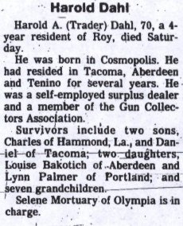

Le , une vedette garde-côte américaine, commandée par Harold Dahl, dans laquelle se
trouvent également son fils (15 ans), son chien, ainsi qu'un autre membre d'équipage, patrouille au niveau de Puget Sound. Le jour est morne et sombre, avec des nuages bas.
Le bateau fait escale dans une baie de l'île Maury (Maury island), à environ 5
km de Tacoma. Les gens à bord de la vedette voient alors 6
machines très grosses, en forme de beignets juste au-dessus de leurs têtes, à environ 600 m de hauteur.
Aucun de ces engins n'émet de bruit. 5 des ovnis commencent à tourner autour du 6ème, lequel perd de l'altitude
jusqu'à ce qu'il s'arrête, en vol stationnaire, à environ 150 m (250 m ?) au-dessus du niveau de l'eau. Dahl évalue
son diamètre à 30 m, et la largeur du trou en son milieu (comme à Phoenix) à 8 m. Sur son bord extérieur, métallique
et brillant, se trouvent des hublots de 2 m ; la circonférence interne est trouée de sombres fenêtres circulaires.
De crainte que cet engin ne tombe dans la mer, Dhal range le bateau sur la plage. C'est là qu'il prend 4
photographies des objets. L'ovni central vomit alors des fragments de métal en fusion qui tombent dans l'eau
et sur le rivage. L'un d'eux tue le chien, un autre brûle grièvement le fils de Dahl, et une mouette est également
tuée. Le bateau est endommagé. Puis l'ovni s'élève, rejoint les autres, et tous les 6 partent à toute vitesse
au-dessus du Pacifique. Les hommes recueillent des échantillons de métal encore chaud. De retour au port, Dahl
rapporte les événements à son officier supérieur, Fred Crisman.
Le lendemain matin, un homme vêtu de noir arrive chez Dahl
dans une Buick noire et l'invite à déjeûner. Durant le repas, il déclare à Dahl être au courant de tout ce qui s'est
passé à Maury et lui dit :
Le silence est la meilleure chose pour vous et votre famille. Vous avez vu ce que vous n'auriez jamais du voir.
Dahl établit plus tard que personne n'a parlé à qui que ce soit de leur étrange expérience.
Arnold organise une expédition à l'île Maury en compagnie de Crisman et Dahl, mais il s'avère que le moteur de leur bateau rend
l'âme.
Disparitions
Crisman promet de rappeler Arnold dès que le problème serait
résolu. Il ne le fera jamais. Et ne rendra pas non plus les photographies. Il est devenu introuvable — d'après
Dahl, il a quitté la ville pour affaires; d'après d'autres sources, il a été vu pour la dernière fois montant à bord
d'un avion militaire en partance pour l'Alaska.
Puis le fils de Dahl disparaît à son tour. De plus, il semble que quelqu'un ait truffé de micros la chambre d'hôtel
de Kenneth E. Arnold, transmettant aux journaux locaux les détails de ses conversations,
même celles qu'il eut seul avec Brown et Davidson. Il contacte un autre officier de renseignements de la base USAF de McCord, le major Sanders. Ce dernier l'emmène chez un fondeur de
Tacoma (probablement Asarco à Ruton) et lui montre des scories commes les morceaux de Dahl et Crisman. Arnold ne
les considère pas identiques. Lorsqu'Arnold souhaite en prendre un
échantillon, Sanders le dissuade. Sanders demande tous les morceaux à Arnold
et Smith. Après qu'il les ait mis à l'arrière de sa voiture, ils ne les renverrons plus jamais.
Le , Dahl raconte toute l'histoire à Arnold dans la chambre du Winthrop Hotel de Tacoma :
Le dans l'après-midi vers 14 h je patrouillais la Baie Est de l'Ile Maury près de la
côte. Cette île pratiquement inhabitée se trouve directement opposée à Tacoma à environ 3miles de la terre principale. Ce jour-là la mer était plutôt agitée et il y avait de nombreux nuages bas. En tant
que capitaine, je dirigeait mon bateau de patrouille près de la côte d'une baie sur l'île Maury. A bord se
trouvaient 2 hommes d'équipage, mon fils de 15 ans et son chien.
As I looked up from the wheel on my boat I noticed six very large doughnut-shaped aircraft. I would judge they
were at about 2000 feet the water and almost directly overhead. At first glance I thought them to be balloons as
they seemed to be stationary. However, upon further observance, five of these strange aircraft were circling very
slowly around the sixth one which was stationary in the center of the formation. It appeared to me that the center
aircraft was in some kind of trouble as it was losing altitude fairly rapidly. The other aircraft stayed at a
distance of about two hundred feet above the center one as if they were following the center one down. The center
aircraft came to rest almost directly overhead at about five hundred feet above the water.
All on board our boat were watching these aircraft with a great deal of interest as they apparently had no
motors, propellers , or any visible signs of propulsion, and to the best of our hearing they made no sound. In
describing the aircraft I would say they were at least one hundred feet in diameter. Each had a hole in the
center, approximately twenty-five feet in diameter. They were all a sort shell-like gold and silver color. Their
surface seemed of metal and appeared to be burled because when the light shone on them through the clouds they
were brilliant, not all one brilliance, but many brilliance’s, something like a Buick dashboard. All of the
aircraft seemed to have large portholes equally spaced around the outside of their doughnut exterior. These
portholes were from five to six feet in diameter and were round. They also appeared to have a dark, circular,
continuous window on the inside and bottom of their doughnut shape as though it were an observation window.
All of us aboard the boat were afraid this center balloon was going to crash in the bay, and just a little while
before it stopped lowering, we had pulled our boat over to the beach and got out with our harbor patrol camera. I
took three or four photographs of these balloons.
The center balloon-like aircraft remained stationary at about five hundred feet from the water while the other
five aircraft kept circling over it. After about five or six minutes one of the aircraft from the circling
formation left its place in the formation and lowered itself down right next to the stationary aircraft. In fact,
it appeared to touch it and stayed stationary next to the center aircraft as if it were giving some kind of
assistance for about three or four minutes.
It was then we heard a dull thud, like an underground explosion or a thud similar to a man stamping his heel on
damp ground. Immediately following this sound the center aircraft began spewing forth what seemed like thousands
of newspapers from somewhere on the inside of its center. These newspapers, which turned out to be a white type of
very light metal, fluttered to earth, most of them lighting in the bay. Then it seemed to hail on us, in the bay
and over the beach, black or darker type of metal which looked similar to lava rock. We did not know if this metal
was coming from the aircraft but assumed it was, as it fell at the same time the white type metal was falling.
However, since these fragments were of a darker color, we did not observe them until they started hitting the
beach and the bay. All of these latter fragments seemed hot, almost molten. When they hit the bay, steam rose from
the water.
We ran for shelter under a cliff on the beach and behind logs to protect ourselves from the falling debris. In
spite of our protection, my son’s arm was injured by one of the falling fragments and our dog was hit and
killed. We buried the dog at sea on our return trip to Tacoma.
After this rain of metal seemed over, all of these strange aircraft lifted slowly and drifted out to the westward,
which is out to sea. They rose and disappeared at a tremendous height. The center aircraft, which had spewed the
debris, did not seem to be hindered in its flight and still remained in the center of the formation as they all
rose and disappeared out to sea.
We tried to pick up several pieces of the metal or fragments and found them very hot -- in fact, I almost burned
my fingers -- but after some of them had cooled we loaded a considerable number of the pieces aboard the boat. We
also picked up some of the metal which had looked like falling newspapers.
My crew and I discussed this observance for awhile and I attempted to radio from my patrol boat back to my base.
The static was so great it was impossible for me to reach my radio station. This I attributed to the presence of
these aircraft, as my radio had been in perfect operating order and the weather would not have caused this amount
of interference.
The wheelhouse on our boat had been hit by falling debris and damaged. We immediately started our engines and
went directly to Tacoma, where my boy was given first aid at the hospital there. Upon reaching the dock I had to
tell my superior officer how the boat had been damaged and why the dog had not returned with us. I related our
experience to Fred L. Crisman, my superior officer. I could plainly see that he did not believe it and I guess I
don’t blame him, but we gave him the camera with its film and fragments of metal we had loaded aboard as
proof of our story. Fred L. Crisman decided he would at least go and investigate the beach where I judged at least
twenty tons of debris had fallen.
I might add that these strange aircraft appeared completely round, but seemed a little squashed on the top and on
the bottom as if you placed a large board on an inner tube and squashed it slightly. The film from our camera,
developed showed these strange aircraft, but the negatives were covered with spots similar to a negative that has
been close to an X-ray room before it was exposed except that the spots printed white instead of black as in the
usual case.
Enquête et explication officielle

Coupure de presse sur le décès de Dahl
Le FBI qui a immédiatement démarré une enquête suite au crash, entend Dahl
et Crisman confesser qu'ils ont fabriqué cette histoire de soucoupe
volante. les “débris” auraient consisté en des morceaux de ferraille et de pierre ponce récupéré sur la
plage de Maury Island. L'Armée US et les survivants confirment que le crash du B-25 a été causé par un feu de
moteur.
![Dessin illustrant l'événement du 21 juin [Gigi]](/science/crypto/ufo/enquete/dossier/Maury/1947-06-21.jpg)